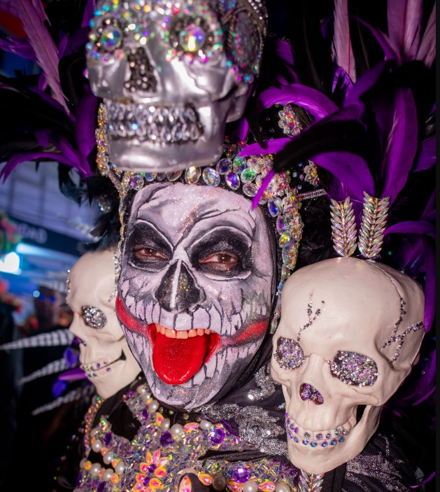
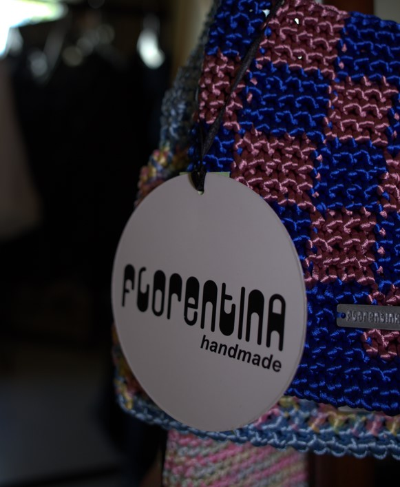
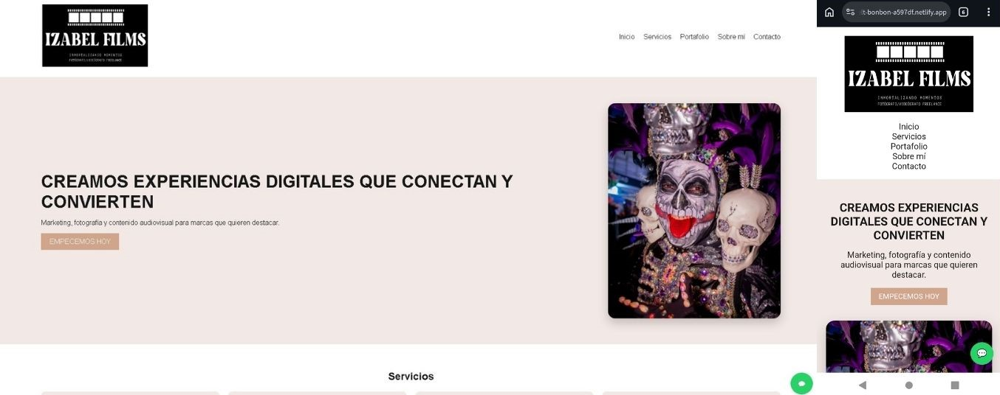
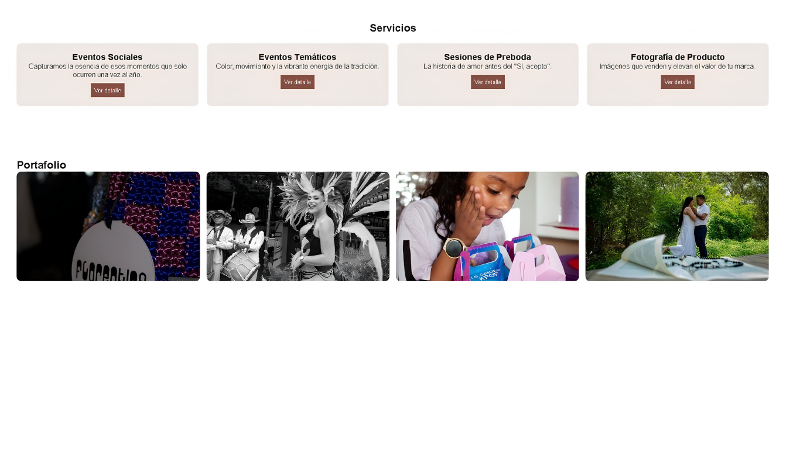
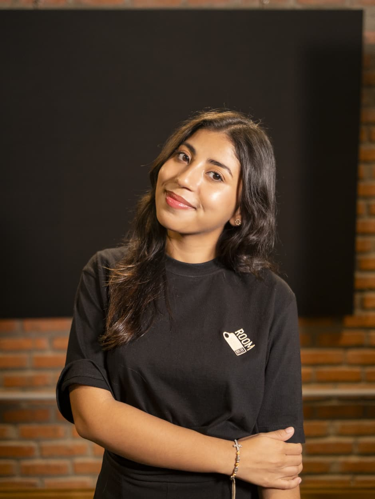
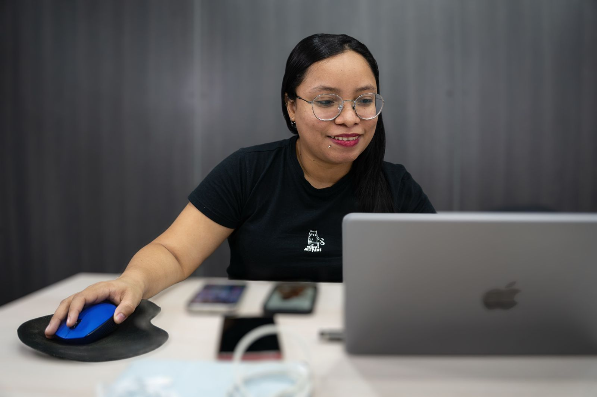
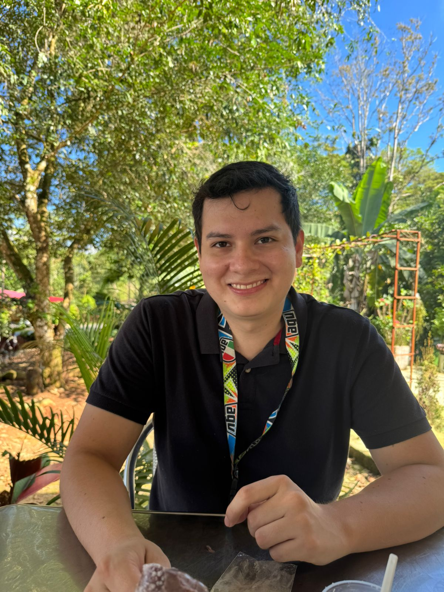

Proyecto desarrollado bajo metodología Scrum, enfocado en validación multimedia, experiencia de usuario, métricas ágiles y mejora continua mediante pruebas reales y análisis de calidad.
Explorar ProyectoEvaluación integral del desempeño del sprint mediante métricas ágiles y validación de calidad del producto multimedia desarrollado.
El sprint presentó una distribución irregular del trabajo, con acumulación de tareas y cierres concentrados en la etapa final.
Se implementaron prácticas Scrum, métricas de seguimiento y validación continua para mejorar la entrega progresiva de valor.
El equipo completó el 100% del alcance comprometido alcanzando 53 Story Points durante el sprint.
Visualización del producto multimedia funcional desarrollado durante el sprint mediante metodologías ágiles Scrum.


Evaluación de usabilidad, accesibilidad y compatibilidad del producto multimedia.
Validación mediante pruebas de usuario y análisis de interacción multimedia.
Optimización de contraste, tipografía, atributos ALT y experiencia inclusiva.
Evaluación responsive y funcionamiento estable en múltiples dispositivos.
Resultados obtenidos mediante pruebas Lighthouse realizadas en computador y dispositivos móviles.
Rendimiento: 71%
Accesibilidad: 80%
Prácticas Recomendadas: 96%
SEO: 82%
Rendimiento: 75%
Accesibilidad: 74%
Prácticas Recomendadas: 96%
SEO: 82%
Cumplimiento del Alcance: 100%
Story Points Completados: 53
Sprint Finalizado Correctamente
Validación Continua del Producto
Presentación del sprint, métricas Scrum, validación multimedia y resultados obtenidos.
Pitch del Proyecto Multimedia
Acciones orientadas a fortalecer la experiencia de usuario, optimización técnica y prácticas Scrum.
Mejora de accesibilidad, contraste, tamaño de tipografía y diseño responsive.
Compresión de imágenes, implementación de lazy loading y mejora de rendimiento.
Reorganización de tareas y reducción de acumulación de Work In Progress.
Fortalecimiento de dailies y seguimiento continuo mediante ClickUp.
Integrantes y roles del sprint multimedia.

Scrum Master

Product Owner

Developer Lead
Designer & Dev
Aprendizajes obtenidos durante el desarrollo colaborativo del sprint.
Aplicación práctica de Scrum, seguimiento mediante métricas y control del sprint.
Evaluación de accesibilidad, compatibilidad y experiencia de usuario mediante pruebas reales.
Identificación de oportunidades para optimizar flujo de trabajo y entrega incremental de valor.